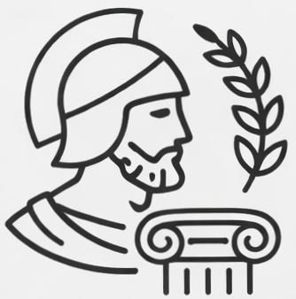
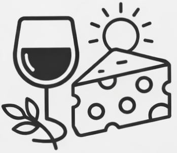
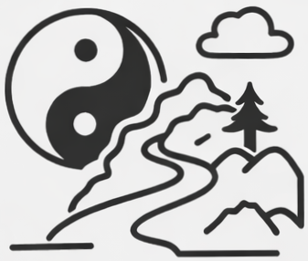
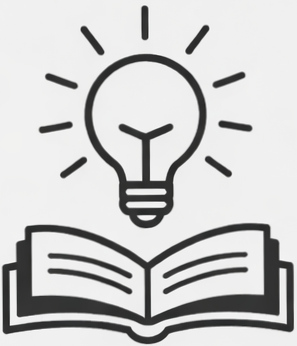

Tetras of Epistoism
Four ancient traditions. One balanced way of life.

Clarity of Thought
Focus on what depends on you.
Do not waste your energy on the rest.

Simplicity
Find joy in simple things.
A peaceful life requires no excess.

Naturalness
Act according to the situation.
Flow with the current of life.

Measure
Know where to stop.
Balance matters more than extremes.
Ideas That Speak Without Words
Some things become clearer when they are seen rather than explained.
These visual metaphors transform philosophical ideas into memorable images.
Shape the Philosophy of Balance
Epistoism is more than a collection of ideas—it is a growing exploration of balance, resilience, and joy.
Follow the visual philosophy, explore the core theory, and discover practical principles for everyday life.
Reach Out for Deeper Dialogue
If these ideas resonate with you, I would be glad to hear your thoughts, questions, or reflections.